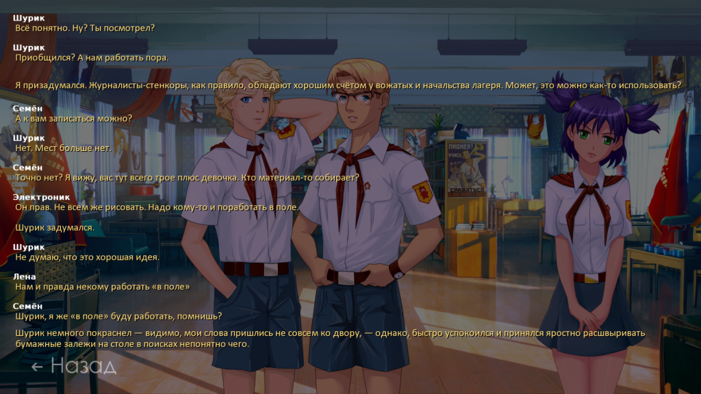

7дл, хотфикс 0.8d

7дл, хотфикс 0.8d
автор 7dl-kun в Вт 14 Окт 2014 - 2:02
Брать здесь: rghost.ru/58509969

7dl-kun- Находка для шпиона

- Сообщения : 3026
Дата регистрации : 2014-09-07
Откуда : здесь столько наркоманов?
Re: 7дл, хотфикс 0.8d
автор peregarrett в Вт 14 Окт 2014 - 4:55

peregarrett- Находка для шпиона
- Сообщения : 3264
Дата регистрации : 2014-09-07
Возраст : 36
Re: 7дл, хотфикс 0.8d
автор peregarrett в Вт 14 Окт 2014 - 11:49
- Спойлер:

Локи, день 2, сон в тихий час, снится Лена
"Тот Я во сне называл себя Локи..." - давно замечал, разве не должно быть завязано на текущую роль? А то получается он сам себя во сне видит.
День 3, свидание у склада.
"Зачем девочку до слёз довёл, изверг?" - для Локи стройно прилепляется к предыдущему диалогу, а вот для Герка вообще не в кассу. Там условие на alt_day2_date == 11 (а alt_day3_change_sl_un вообще нигде не выставляется в True)
День 4, утро
"Она куда-то до подъема еще ушла" - должно идти от Мику
Продолжение следует!
peregarrett- Находка для шпиона
- Сообщения : 3264
Дата регистрации : 2014-09-07
Возраст : 36
Re: 7дл, хотфикс 0.8d
автор 7dl-kun в Вт 14 Окт 2014 - 11:54
7dl-kun- Находка для шпиона
- Сообщения : 3026
Дата регистрации : 2014-09-07
Откуда : здесь столько наркоманов?
Re: 7дл, хотфикс 0.8d
автор peregarrett в Ср 15 Окт 2014 - 12:12
утро 4 дня, встреча с Мику - постояно Мику и Лена путаются, и в тексте, и в спрайтах.
Надо условие на первый день. Если от автобуса шел со Славей, то никакой саранчи не видел."Меня навестило дежавю родом из первого дня здесь."
"Во всяком случае, звуки, которые издала Лена, не уступали в громкости ничем тому, что вызвала злополучная саранча."
un "Ииииииии!"
места, которые напрягают стилистически:
Покажите мне человека, который ранним утром будет такие смысловые конструкции лепить, хотя бы и мысленно. Шиза еще могла бы, но она как раз выражается кратко."Не очень понимая причин своего приподнятого настроения, я открыл левый глаз совершенно самостоятельно за десять минут до подъёма (чуть не сказал «будильника») и тут же спрятался под подушку от врадчивого рассветного солнышка."
Очень много запятых. Опять же уточнение "развернувшись" - она могла убежать задним ходом? Славя тоже зачем-то "развернувшись" убегает"Тут она, похоже, утратила остатки своей брони высокомерия, так как засмущалась, в стиле, свойственном лишь рыжим, мгновенно вспыхнула под самый корень волос и, развернувшись, убежала в сторону площади."
По тексту получается будто бы пока он клялся, прошло три дня и ногти отросли."Ногти незаметно отросли за три дня и больно врезались в мягкую кожу ладоней - да, так и не сходил к турничку с первого дня - пока я клялся, что если я выберусь и брошу якорь в этом мире…"
Вот этот кусок хорошо бы в отдельном окошке выводить, как в первом дне воспоминания про детство. А то там про путч, а на тебя смеющаяся Лена глядит."И мои мысли удивительным образом перекликаются с человеком, решившим обмануть неизбежное взросление, устроившись работать вожатым."
...
"Я с усилием выпутался из переплетения нескольких слоёв реальности и в упор уставился на Лену."
И этот тоже."Перед глазами, затмевая свет, но ничуть не мешая любоваться моим солнышком, с огромной скоростью разворачивалась киноплёнка-хроника событий, которые не могли произойти, но я помнил их яснее собственного имени."
...
потом еще добавлю
peregarrett- Находка для шпиона
- Сообщения : 3264
Дата регистрации : 2014-09-07
Возраст : 36
Re: 7дл, хотфикс 0.8d
автор 7dl-kun в Ср 15 Окт 2014 - 13:21
Вообще, отдельными экранами лучше бы не пренебрегать - а то все усилия по поводу избавления гг от аутизма пропадут втуне. Но насчёт путча согласен - там контрастно с картинкой получается.
7dl-kun- Находка для шпиона
- Сообщения : 3026
Дата регистрации : 2014-09-07
Откуда : здесь столько наркоманов?
Re: 7дл, хотфикс 0.8d
автор peregarrett в Ср 15 Окт 2014 - 14:58
баги:
интервью с Мику, если не вступал в кружок - потерял джамп на полдник в конце, в итоге попадаем на корт.
Вечером на понтонах:
Сюда никогда не попадем, потому что уровнем выше "if herc or loki:"else:
me "Поэтому сцена с совёнком оказалась для меня неожиданной."
стиль:
Верни литр, он явно там был. После трех его можно было б уже закапывать, а он вон даже ходит куда-то.
и трёх литров водки, пришедшегося только на меня
"Последний" - последний из грифелей, или последний из перечня "ватман, грифель"?"Взяв из кипы нарезанного ватмана белый лист и толстый грифель, она вытянула последний, зажав в кулаке, вертикально, и, зажмурив левый глаз, правым посмотрела на меня поверх этого самого грифеля."
Вообще канцелярщина какая-то получается. "Вышеупомянутый грифель".
И почему вообще грифель, а не обычный карандаш?
Надо бы хоть парой слов упомянуть процесс подготовки бумажек. А то будто у них уже давно заготовлены все вопросы и желания.
me "Значит, тянешь фант из коробки с желаниями. {w}Всё просто."
"Немного посомневавшись, она кивнула."
un "Хорошо, давай попробуем."
"Раскидав бумажки по коробкам, мы приступили к процессу!"
Фраза рвущая мозг. Отучиться в вузе? Или бросить дурную привычку (но тем не менее считаться художником, лол)? Или прокачать скилл настолько, чтоб процесс стал не "рисованием", а "Творением"?отучиться рисовать и стать художником
Фраза совсем не в стиле девочки-пулемета. Было бы что-нибудь вроде "Ура-ура! Садитесь вон там сзади, там места на весь наш отряд!"mi "Очень хорошо! Занимайте места - под наш отряд отведены четыре задние скамейки в центральном ряду, и устраивайтесь поудобнее. Концерт вот-вот начнётся."
Уф. Вроде все.
peregarrett- Находка для шпиона
- Сообщения : 3264
Дата регистрации : 2014-09-07
Возраст : 36
Re: 7дл, хотфикс 0.8d
автор peregarrett в Ср 15 Окт 2014 - 15:03
Вроде бы только Дрищ ее обнюхивает и акцентирует внимание на грейпфруте? Хотя это не так уж важно"А я вздохнул в унисон, ощутив любимый запах шампуня с грейпфрутом."
peregarrett- Находка для шпиона
- Сообщения : 3264
Дата регистрации : 2014-09-07
Возраст : 36
Re: 7дл, хотфикс 0.8d
автор 7dl-kun в Ср 15 Окт 2014 - 15:34
7dl-kun- Находка для шпиона
- Сообщения : 3026
Дата регистрации : 2014-09-07
Откуда : здесь столько наркоманов?
Re: 7дл, хотфикс 0.8d
автор peregarrett в Ср 15 Окт 2014 - 15:38
7dl-kun пишет:Парадоксально, но на сову можно сходить и локи, и герком. Странно, что я должен говорить такие вещи. Остальное поправлю.
- Код:
if herc or loki:
...
if loki:
me "В-общем, то что ты меня сюда позавчера привела… Я счёл временной слабостью."
elif herc:
me "И твою импровизированную экспозицию я принял за попытку отделаться от меня."
else:
me "Поэтому сцена с совёнком оказалась для меня неожиданной."
...
else:
...
peregarrett- Находка для шпиона
- Сообщения : 3264
Дата регистрации : 2014-09-07
Возраст : 36
Re: 7дл, хотфикс 0.8d
автор Demiurge-kun в Ср 15 Окт 2014 - 16:57
peregarrett - пионер, всем пример.

Demiurge-kun- Хикка

- Сообщения : 216
Дата регистрации : 2014-09-13
Re: 7дл, хотфикс 0.8d
автор peregarrett в Ср 15 Окт 2014 - 16:58
Всегда Готов!Demiurge-kun пишет:
peregarrett - пионер, всем пример.
peregarrett- Находка для шпиона
- Сообщения : 3264
Дата регистрации : 2014-09-07
Возраст : 36
Re: 7дл, хотфикс 0.8d
автор Demiurge-kun в Ср 15 Окт 2014 - 17:02
Demiurge-kun- Хикка
- Сообщения : 216
Дата регистрации : 2014-09-13
Re: 7дл, хотфикс 0.8d
автор 7dl-kun в Ср 15 Окт 2014 - 17:04
7dl-kun- Находка для шпиона
- Сообщения : 3026
Дата регистрации : 2014-09-07
Откуда : здесь столько наркоманов?
Re: 7дл, хотфикс 0.8d
автор Demiurge-kun в Ср 15 Окт 2014 - 19:15
- Подробнее::
- Пролог Герка, но отыгрыш Дрища (увязался за Славей).
Пришел на танцульки, оба танца с Мику, намек на хентай, ля-ля-тапаля...
Следом: 7дл-Мику-рут (а так надеялся на классику).
Тут был первый звоночек, ибо по обсуждениям на форуме, для романса Мику нужно навернуться с крыши, но Винтика со Шпунтиком НЕ БЫЛО на танцульках. Никто не предлагал мне навернуться с крыши (тут могу ошибаться, ибо пропустил дискач в промотке, но ведь выбор "помочь/послать" должен же был появиться).
А далее ГГ сожалеет о том, что не помог кибернетикам(sic!) и Шурило заливает ему на тему "Променял друзей на тян". Тут я офигел.
Кончилось тем, что я таки принес ему егоэротическиекибирнетические журналы и получил заветный ключик. И тут к великому моему сожалению меня кинуло на DJ-рут.
Короч фрустрация у меня...
Больше претензий в плане логики нет, но есть пара очепяток и в одном предложении нет запятой от чего теряется его смысл, но об этом позже, ибо тороплюсь.
Рут недопрошел, ибо тороплюсь, опять же.
Demiurge-kun- Хикка
- Сообщения : 216
Дата регистрации : 2014-09-13
Re: 7дл, хотфикс 0.8d
автор peregarrett в Ср 15 Окт 2014 - 19:18
Что-то тут не так, киберы должны приходить всегда, причем дважды - до танцев и перед вторым.
peregarrett- Находка для шпиона
- Сообщения : 3264
Дата регистрации : 2014-09-07
Возраст : 36
Re: 7дл, хотфикс 0.8d
автор 7dl-kun в Ср 15 Окт 2014 - 20:47
Архитектурная проверка идёт так:
Если соглашался помочь в медпункте - прыжок на диалог о нём.
Если ловил жуков - улыбаем вожатую жуками.
Если ни одно из вышеупомянутых условий не верно, к нам подходят кибенематики и напоминают о беседе после ужина.
В-общем, если мы Мику романсим, тогда достаточно просто не ходить в столовую после обеда либо отказаться помогать Ульяне.
Ну и да, в 7дл-руте охота за ключом уводит к DJ, таки дела.
Диалог с "друзей на бабу променял" пофиксил (=
7dl-kun- Находка для шпиона
- Сообщения : 3026
Дата регистрации : 2014-09-07
Откуда : здесь столько наркоманов?
Re: 7дл, хотфикс 0.8d
автор peregarrett в Ср 15 Окт 2014 - 20:49
peregarrett- Находка для шпиона
- Сообщения : 3264
Дата регистрации : 2014-09-07
Возраст : 36
Re: 7дл, хотфикс 0.8d
автор Demiurge-kun в Ср 15 Окт 2014 - 21:21
Д3. Подготовка к танцулькам. Музкружок.
Должна идти от Мику.Семён пишет:Впрочем, об этом мы уже вчера разговаривали, то есть, я об этом говорила, но я думаю, ты понял, о чем я.
Д3. Поем с Мику и Алисой.
Должна идти от СемёнаИ обугленный фильтр на пальцах мне оставил ожо-о-о-ог.
Там же:
Стоит спрайт печальной Алисы, что несоответствует...Она (думаю, что Алиса) махнула рукой, рассмеялась, и блеснув глазами, продолжила:
Д3. Тихий час, нас застукала Мод-тян за переодеванием.
Еще тут запятых не хватает... Кажется... Наверное......пионер почти голый одна штука, пионер расстрепаннй женского пола одна штука...
Д3. ГГ повысил голос на Мод-тян, получил "добро" на поход в музкружок.
Вопросительного знака нема.Мику пишет:А зачем я тебе нужна Ты так легко ушел, когда тебя увели...
Д3. Банька после танцулек.
Нехватает запятой, от этого теряется смысл. Либо она имела в виду, что ей хорошо, как после бани(маловероятно), либо что ей после бани хорошо. Короче, как в "казнить нельзя помиловать", только не так критично.Славя пишет:Хорошо как после баньки...
Д4. Мику-7дл-рут. Поиск журналов для инвалида.
Должна быть в кавычках и не идти от лица ГГ, иначе Мицу услышит. =)Семён пишет:Я могу натравить на нее вожатую.
Впрочем, я думаю, что Мицу пофигу на слова "Оболтуса-Семёна".
Demiurge-kun- Хикка
- Сообщения : 216
Дата регистрации : 2014-09-13
Re: 7дл, хотфикс 0.8d
автор Chess в Ср 15 Окт 2014 - 21:30
По-моему, выражение двоякого толкования не допускает. Запятая тут точно лишняя.Д3. Банька после танцулек.
Славя пишет:Хорошо как после баньки...
Нехватает запятой, от этого теряется смысл. Либо она имела в виду, что ей хорошо, как после бани(маловероятно), либо что ей после бани хорошо. Короче, как в "казнить нельзя помиловать", только не так критично.

Chess- Находка для шпиона
- Сообщения : 3798
Дата регистрации : 2014-10-05
Откуда : Город на краю света
Re: 7дл, хотфикс 0.8d
автор peregarrett в Ср 15 Окт 2014 - 21:33
"Хорошо как, после баньки..."
"Хорошо, как после баньки..."
Можно остановиться на варианте "Хорошо-то как, после баньки..." ("мать-мать-мать" - привычно откликнулось эхо)
peregarrett- Находка для шпиона
- Сообщения : 3264
Дата регистрации : 2014-09-07
Возраст : 36
Re: 7дл, хотфикс 0.8d
автор Ingvar в Чт 16 Окт 2014 - 4:10
7dl-kun пишет:Два танца - это первый чек на 7дл. Для классики обязательно навернуться с крыши вместо второго танца. Киберы подходят так или иначе, фиг знает, почему не подошли (=
Архитектурная проверка идёт так:
Если соглашался помочь в медпункте - прыжок на диалог о нём.
Если ловил жуков - улыбаем вожатую жуками.
Если ни одно из вышеупомянутых условий не верно, к нам подходят кибенематики и напоминают о беседе после ужина.
В-общем, если мы Мику романсим, тогда достаточно просто не ходить в столовую после обеда либо отказаться помогать Ульяне.
Ну и да, в 7дл-руте охота за ключом уводит к DJ, таки дела.
Диалог с "друзей на бабу променял" пофиксил (=
Хмм.. Я 0.8 версию пока не запускал, но в 0.7 как-то заметил, что кибернетики ко мне не подходили, при том, что с Леной не общался, а Ульяне (ради кармы) отказывал, из набора послеобеденных событий выходил через муз-кружок(подбор наряда Мику).. Пытался разобраться по коду, почему так случилось, но так и не понял и забил на это.
Ingvar- Сыч

- Сообщения : 63
Дата регистрации : 2014-09-07
Возраст : 39
Откуда : Санкт-Петербург
Re: 7дл, хотфикс 0.8d
автор Demiurge-kun в Чт 16 Окт 2014 - 8:19
Вероятно где-то критичный выбор, меня снова бросило на Мику-7дл-рут. Как я и представлял, пинать ГГ будут по поводу и без. =)
К делу.
Родительский день. Ужин. Сёма утверждает что прозвучал горн на ужин, однако звука горна не было. Видать пока он на крышу лазил, что-то задел и доломал. =)
UPD: Прошел-таки кусочек рута. На следущее утро выбило снова на DJ-рут-заглушку. Ощущаю себя футбольным мячиком.
Нашел еще очепятку.
Вечер того же дня, пляж, после "выступления" Мицу и Эла.
Насколько мне известно, японские имена не склоняются. =DМики отрицательно покачала головой, но спорить не стала...
Demiurge-kun- Хикка
- Сообщения : 216
Дата регистрации : 2014-09-13
Re: 7дл, хотфикс 0.8d
автор 7dl-kun в Чт 16 Окт 2014 - 10:22
Бида какая-то... Ладно, сейчас хотфикс выкачу.Ingvar пишет:
Хмм.. Я 0.8 версию пока не запускал, но в 0.7 как-то заметил, что кибернетики ко мне не подходили, при том, что с Леной не общался, а Ульяне (ради кармы) отказывал, из набора послеобеденных событий выходил через муз-кружок(подбор наряда Мику).. Пытался разобраться по коду, почему так случилось, но так и не понял и забил на это.
На классику ТОЛЬКО через медпункт. Сейчас хотфикс сброшу, должно работать.Demiurge-kun пишет:Диссонанснуло меня, камрады.
Вероятно где-то критичный выбор, меня снова бросило на Мику-7дл-рут. Как я и представлял, пинать ГГ будут по поводу и без. =)
К делу.
Родительский день. Ужин. Сёма утверждает что прозвучал горн на ужин, однако звука горна не было. Видать пока он на крышу лазил, что-то задел и доломал. =)
UPD: Прошел-таки кусочек рута. На следущее утро выбило снова на DJ-рут-заглушку. Ощущаю себя футбольным мячиком.
Нашел еще очепятку.
Вечер того же дня, пляж, после "выступления" Мицу и Эла.Насколько мне известно, японские имена не склоняются. =DМики отрицательно покачала головой, но спорить не стала...
Горн вернул на место.
И, да, "Мику" не склоняется (=
7dl-kun- Находка для шпиона
- Сообщения : 3026
Дата регистрации : 2014-09-07
Откуда : здесь столько наркоманов?